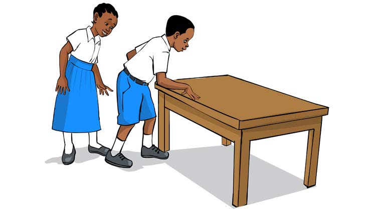

Activity 1:
Measuring the length of a classroom
1.
Measure the length of the classroom using footstep.
2.
Record the length of the classroom.
3.
Ask your friend to measure and record the length of the classroom using similar tool used in task 1.
4.
Compare the measurements you obtained and that of your friend.
5.
Explain about the similarities or differences of the obtained measurements.
Standard tools used for measuring length
Standard tools for measuring length provide exact results which are acceptable worldwide. They include tape measure, ruler and metre stick. These tools give measurements in metric units. The common metric units of length include millimetres (mm), centimetres (cm), metres (m) and kilometres (km). The following picture shows some of the standard tools for measuring length.
MATHEMATICS STD III PB (DEC 2023).indd 77
18/09/2025 15:31:28